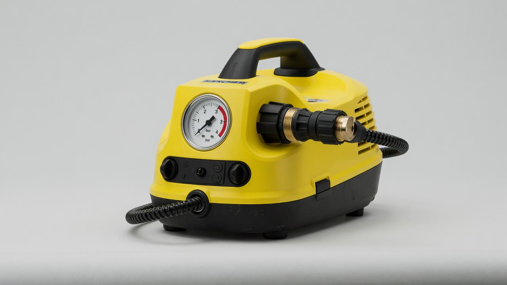

Vapeur professionnelle
Modèle sous réserve de plaqueKärcher SG 4/4 — nettoyeur vapeur pro
Nettoyeur vapeur professionnel pour un nettoyage sans détergent dans le réservoir — joints, sanitaires, surfaces adaptées.
Désignation modèle — confirmation plaque en cours. Les consignes d’usage ci-dessous s’appliquent au type d’appareil ; la notice constructeur de la machine remise prime.
| Tarif | 35–40 CHF · tarif indicatif (période confirmée à la demande) |
|---|---|
| Unité | Période de location — détail à la confirmation |
| Caution | 100 CHF |
| Paiement | Twint ou espèces à la remise |
| Remise / retour | Lausanne, sur rendez-vous |
Pour quoi faire
- Joints de carrelage, sanitaires
- Dégraissage léger de surfaces adaptées à la vapeur
- Zones où l’on veut limiter la chimie (dans le respect des matériaux)
Ne pas promettre de résultats sur tous les matériaux : tester zone cachée sur textile ; prudence peintures et revêtements sensibles.
Avant de démarrer
- Appareil à plat ; connecteur vapeur et accessoire bien en place.
- Fermeture de sécurité de chaudière correctement fixée.
- Remplir avec 2 L maximum d’eau potable. Aucun détergent.
- Prise avec terre, différentiel 30 mA max.
- Pompe + chauffage ; attendre l’extinction du voyant jaune « Chauffage ».
- Premier jet sur un chiffon jusqu’à vapeur régulière.
Pendant l’usage
- Jamais vers une personne, un animal, une prise ou un appareil électrique.
- Ne pas mettre l’appareil à la verticale allumé.
- Textile : zone de test, séchage, contrôle couleur/forme.
- Surface peinte : imprégner un chiffon, pas de jet concentré direct.
- Vitre froide : préchauffer ~50 cm avant nettoyage.
Voyants
| Jaune « Chauffage » | Attendre extinction avant de travailler |
|---|---|
| Rouge manque d’eau | Ajouter max 2 L d’eau potable |
| Blanc « Détartrage » | Arrêter et prévenir le loueur ; ne pas détartrer soi-même |
Interdictions
- Détergent ou vinaigre / détartrant dans le réservoir
- Ouvrir la chaudière chaude ou sous pression
- Immerger l’appareil ou l’exposer à un jet d’eau
- Utiliser sans terre / sans différentiel adapté
Arrêt immédiat + prévenir le loueur : câble/fiche/flexible abîmé, fuite vapeur, odeur de brûlé, voyant détartrage, absence de vapeur malgré remplissage correct.
Notice constructeur (lien sortant) : manuel Kärcher SG (PDF) — à vérifier ; la notice de l’unité remise prime.